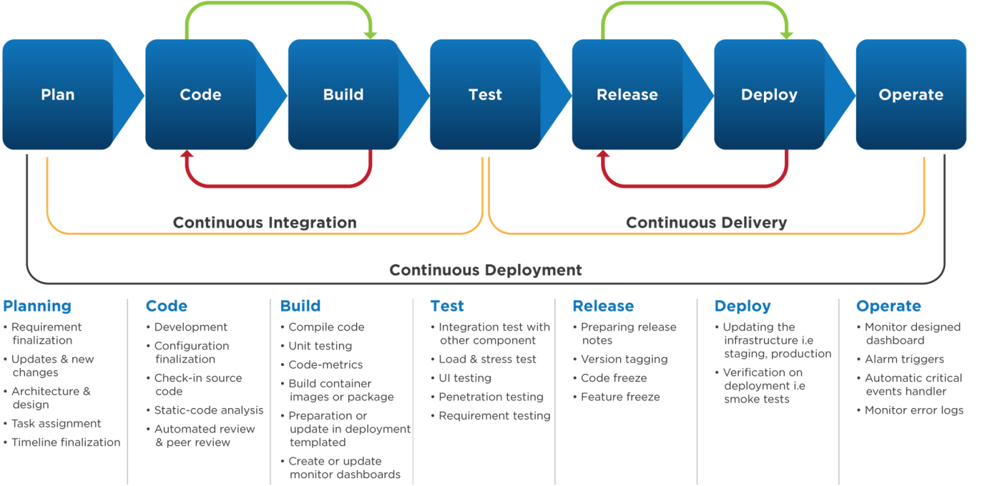

Set up projects for development and production environments

This topic describes how to:
Use separate projects to create development and production environments Many organizations have separate development and production environments so they can build and test new features without disturbing production traffic. In Optimizely, you can create separate projects for each environment to help with governance.
With separate development and production projects, your organization can safely build and QA experiments and Personalization campaigns in a development environment before deploying to production. This approach allows multiple stakeholders in your organization to act as gatekeepers for running new experiments in production.
This article describes how to set up projects for two separate environments and deploy experiments in that setup.
Set up projects First, you’ll start by creating two new projects: one for development and one for production.
Each project will need its own snippet:
Create a project for your development environment.
Implement the snippet in the head tag for that environment.
Add the collaborators who you'd like to have access to your development project.
Next, create a project for your production environment.
Implement the production project snippet in the head tag of the production environment.
Add collaborators who you'd like to have access to your production project.
If you’re using Optimizely, prepare each project by creating all pages, events, and audiences in each project. If you have an Optimizely Web Scale package, you can create events that are available across projects, which saves you time and makes it easier to keep events synchronized across your environments.
Create and deploy experiments Once you’ve set up your development and production projects, use them to create, test, and deploy experiments. Here’s how:
Create an experiment in your development environment. If your development URLs are the same as the URLs used for your production environment, make sure that your production environment does not use the snippet from your development project.
Build and QA your new development experiment to make sure that everything works the way you’d like.
Build the experiment for your production project.
When you’re ready, start the experiment in your production project!